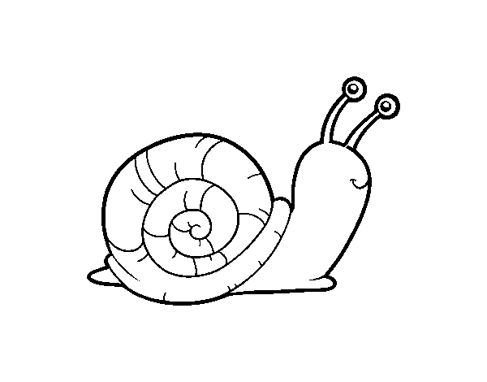

Slow Science

Science needs time to think. Science needs time to read, and time to fail. Science develops unsteadily, with jerky moves and unpredictable leaps forward at the same time, however, it creeps about on a very slow time scale, for which there must be room [...]. Society should give scientists the time they need, but more importantly, scientists must take their time. We do need time to think. We do need time to digest.
— Slow Science Movemement
In today's fast-paced world, it's crucial to reconsider the speed of scientific research. Slow Science advocates for a more thoughtful approach, emphasizing depth, reflection, and quality over producing work hastily. In the face of publish or perish pressures, Slow Science provides a balanced alternative, promoting a culture that values the lasting impact of well-thought-out contributions.
Resources (A selection of)
| Slow Science manifesto [link] |
|
| Alleva L. Taking time to savour the rewards of slow science. Nature, 2006 [link] |
|
| Owens B. Long-term research: Slow science. Nature, 2013 [link] |
|
| Frith U. Fast Lane to Slow Science. Trends in Cognitive Sciences, 2020 [link] |
|
| Stengers I. Another science is possible: A manifesto for slow science. John Wiley & Sons, 2018 [link] |
|
| Garfield E. Fast Science vs. Slow Science, Or Slow and Steady Wins the Race. The Scientist, 1990 [link] |
|
| Salo P. & Heikkinen H. L. Slow science: research and teaching for sustainable praxis. Confero, 2018 [link] |
|
| Berg M. & Seeber B. K. The slow professor: Challenging the culture of speed in the academy. University of Toronto Press, 2016 [link] |
|
| Yseult Héjja-Brichard's website [link] |